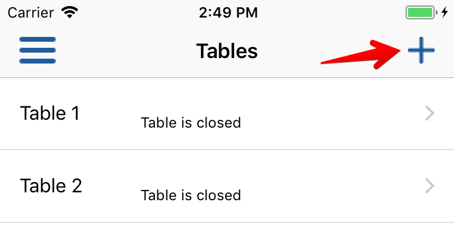
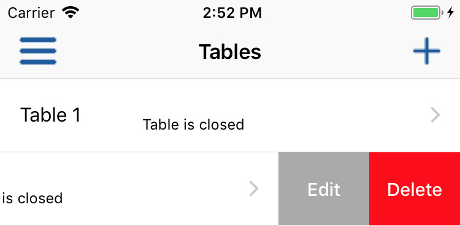
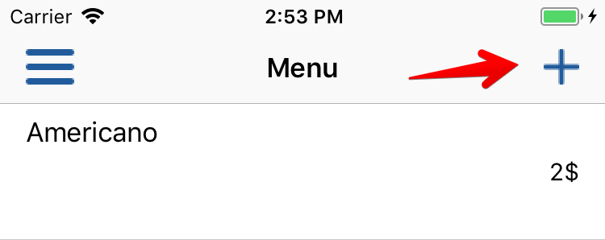
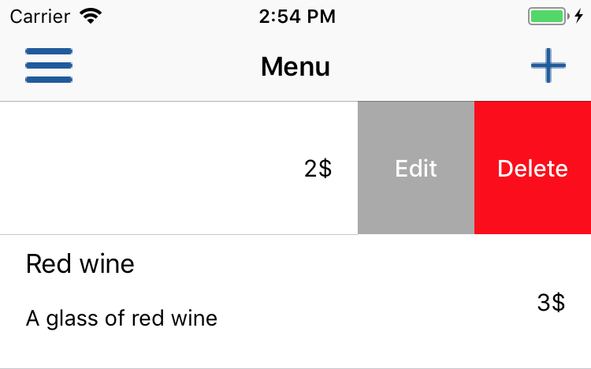
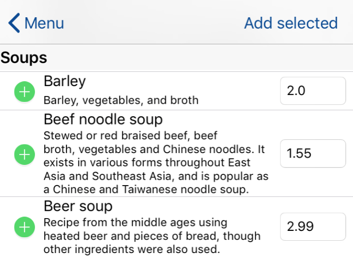
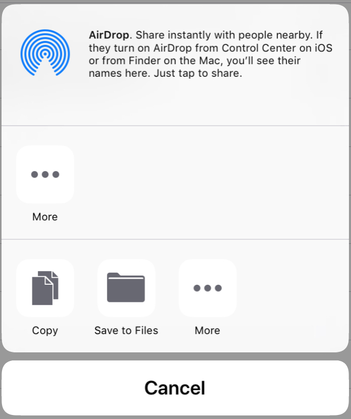
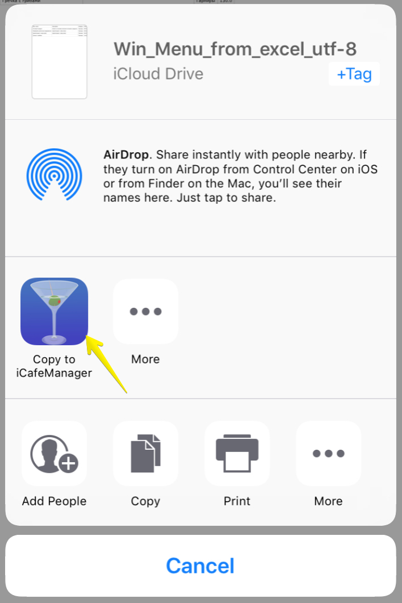

Open Tables view.
Press plus button to add new table:

Enter table params and press "Done" button - table has been added!
WARNING! Name of new table should be unique, both fields cannot be null.
To edit or remove table, perform swipe from right to left for required table:

Change of table params can be done in the same way like table addition.
WARNING! Once table is removed, all archived information related to this table will be removed and not available anymore.
Open Menu view and press plus button to add new item:

Enter name of menu item, description, price and category. When you are filling category name, application will show you possible categories if they have been already added.
WARNING! Name should be unique. Name and price canot be null, description is optional field.
To change or remove menu item, perform swipe from right to left:

WARNING! Once menu item is removed, all orders of this menu item will be removed (even archived ones).
Application has it's own catalogue of different dishes presented in English and Russian languages. To add new items from catalogue, open Menu view and press + button to get adding options. Choose "Add from English catalogue". Once view with cataloguew appeared, press "Add" button. After that you will be able to select required items and input price for them. Once done - press "Add chosen" button.

If you need to import all menu items from the application (for further importing also), press + button and choose export option. Once done - Application will show you possible ways to export created file. For example you can save it in your iCloudDrive or send by mail. File will be exported as CSV file (Comma Separated Values). Delimiter will be ";"

To import existing file, open your file from Files app (if it was saved in your iCloudDrive) or from your mail app and choose "Copy to iCafeManager". iCafeManager will be opened and data will be imported.
